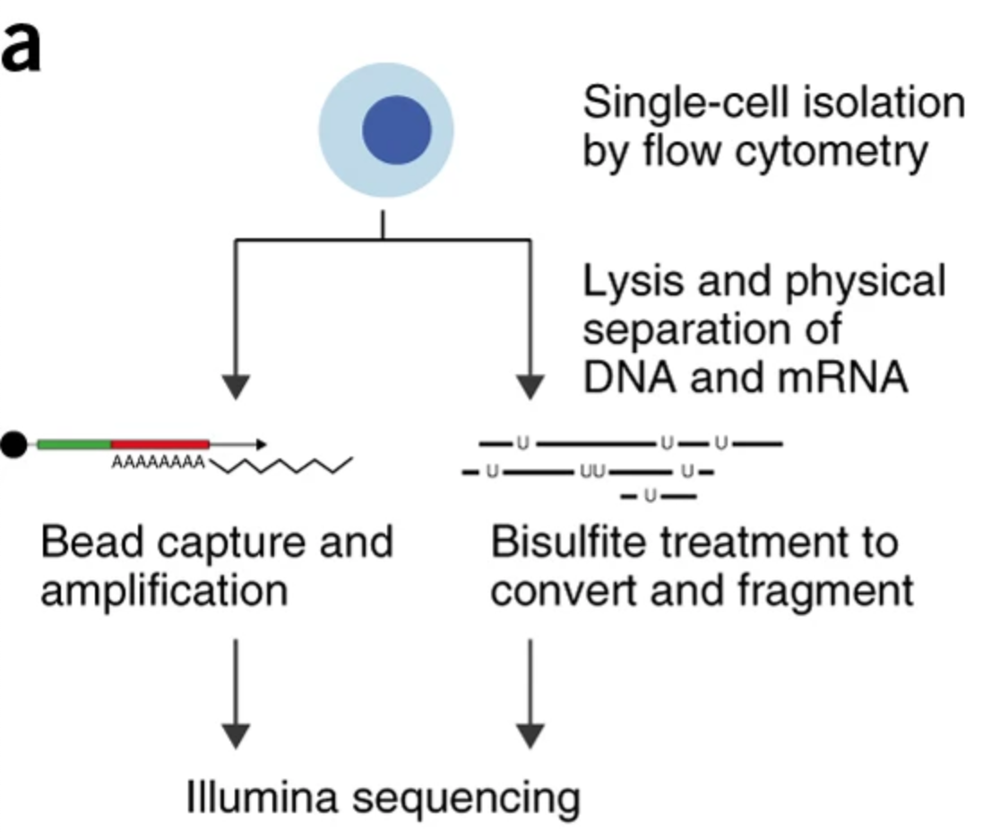

The scM&T-seq method was published by Angermueller et al. in Nature Methods 13, 229-232. It uses oligo-dT magnetic beads to drag mRNA out to achieve phycical separation of mRNA and genomic DNA. For the mRNA part, SMART-seq2 method was used for scRNA-seq, click here to see the step-by-step protocol; for the genomic DNA part, scBS-seq method was used to profile methylation, and click here to see the step-by-step protocol.
